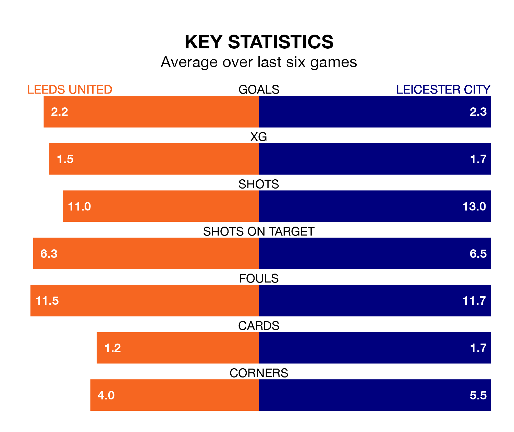

Leicester City travel to Elland Road for Friday's late match against Leeds United looking to bounce back from defeat last time out in EFL Championship.
The Foxes, who sit top of the league after 33 games, fell to a 2-1 home defeat to Middlesbrough on February 17.
They face a Leeds side who picked up a win in their last match, a 2-0 victory against Plymouth Argyle, and who sit second in the table.
With 69 goals in 33 games so far this season, Leicester are the league's highest scorers with 2.1 goals per game. And they are conceding fewer than average, letting in 26 goals at a rate of 0.8 per game.
Leeds are also above average scorers, with 1.8 goals per game, compared to a league average of 1.4. They have conceded 0.8 goals per game.
United are in exceptional form in EFL Championship, with six wins and no losses from their last six games.
With four wins and a draw over that period, City's form is worse – they have taken 13 points from 18, compared to the home team's 18.
With Illan Meslier between the sticks, Leeds can rely on one of the league's safest pair of hands. He has kept 14 clean sheets in his 31 appearances this season, and no 'keeper has prevented the opposition scoring more often in EFL Championship.
In the Foxes' net, Mads Hermansen has 11 clean sheets in 32 games.
In the last 10 years, Leeds and Leicester have played each other on eight occasions. Leeds won two of them, Leicester four, and they drew twice.
On average, Leeds scored 1.0 goal and the Foxes 1.6 in those matches.
Their last meeting was on November 3, when Leeds won 1-0 away.
Updated: 12:18 (UTC), 19/02/24